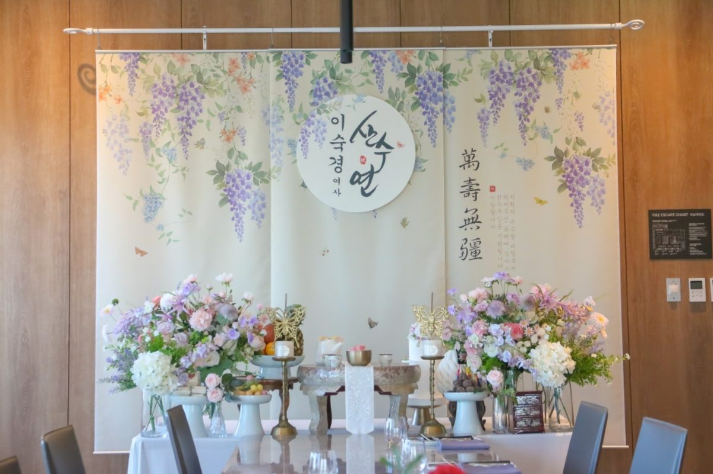
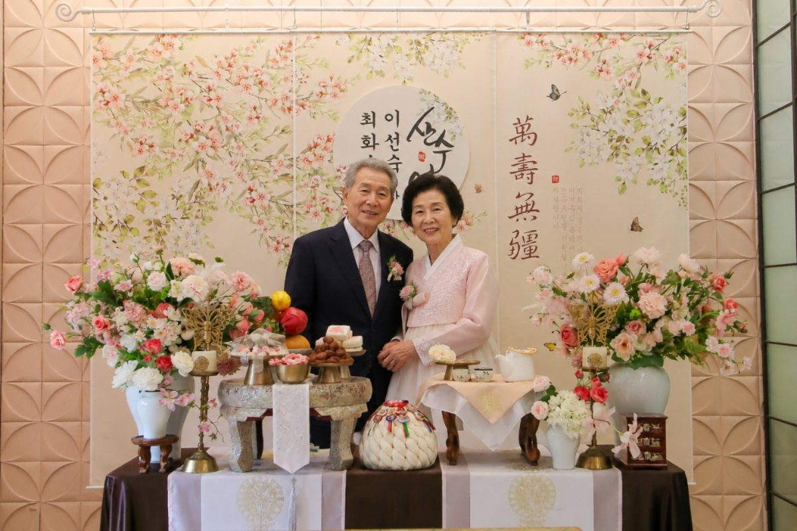
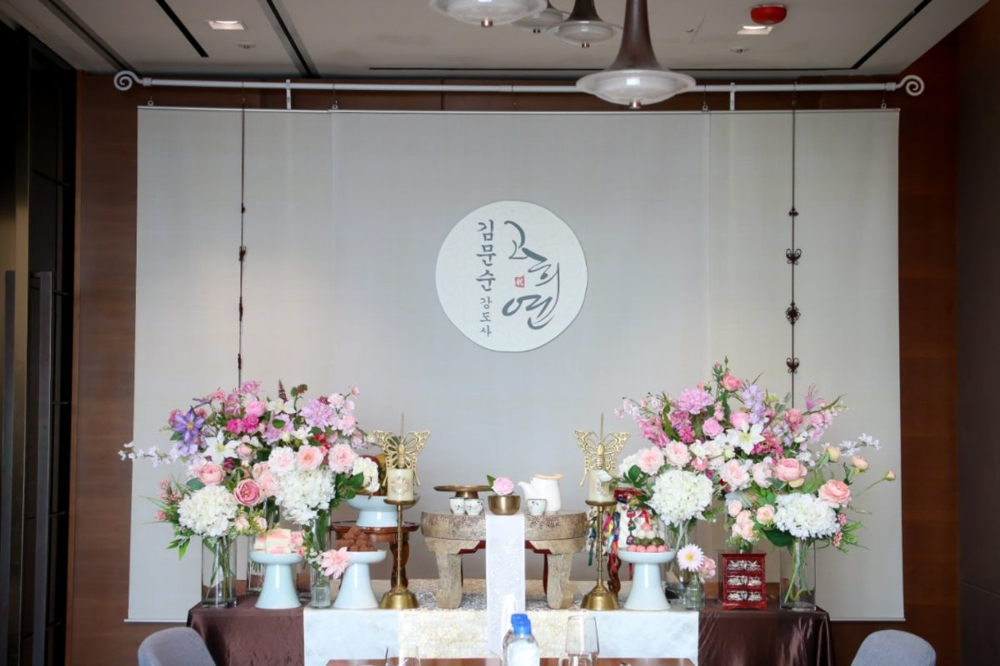

한눈에 보는 대전 팔순잔치 요약
- 팔순 나이: 80세 생신(산수). 우리 나이·만 나이 중 가족이 편한 기준으로 정합니다.
- 가장 중요한 것: 부모님 이동 동선, 앉아서 진행할 수 있는 순서, 짧고 간결한 행사
- 준비 시작: 행사 1~2개월 전 날짜·장소 확정 → 상차림 일정 확정
- 파티후 기본 상차림: 45만원(1800 테이블 기준, VAT 별도)
- 출장 지역: 대전 전 지역(유성구·서구·중구·동구·대덕구), 세종·청주는 상담 후 안내
팔순과 산수연, 무엇이 다른가요?
팔순(八旬)은 여든 살 생신을 뜻하고, 같은 나이를 산수(傘壽)라고도 부릅니다. 우산 산(傘) 자의 약자가 여덟 팔(八) 아래 열 십(十)을 쓴 모양이라 '팔십'을 뜻하게 되었고, 그래서 팔순잔치를 산수연이라고도 합니다.
칠순과 마찬가지로 우리 나이 80세에 치르는 집도 있고 만 80세 생신에 맞추는 집도 있습니다. 정해진 정답은 없으니 부모님 생신과 가족이 모이기 쉬운 날을 기준으로 정하시면 됩니다. 초대장이나 현수막에는 "팔순" 또는 "산수연" 중 편한 표현을 쓰면 됩니다.
칠순과 다른 점: 부모님 컨디션이 먼저입니다
팔순잔치는 칠순보다 어르신이 덜 움직이고, 덜 기다리시도록 준비하는 것이 핵심입니다. 화려한 순서보다 부모님이 편하게 앉아 계신 상태로 축하받는 흐름이 만족도가 높습니다.
- 이동 동선: 주차장·엘리베이터에서 행사장까지 계단 없이 갈 수 있는지 확인합니다.
- 앉아서 진행: 헌주와 축하 인사는 부모님이 의자에 앉으신 채 받으실 수 있게 구성합니다.
- 짧은 행사 시간: 축하 순서는 20~30분 안에 마치고 식사로 넘어가는 편이 좋습니다.
- 가까운 동선: 식사 자리와 상차림·사진 공간을 가까이 두어 이동을 줄입니다.
- 편의시설: 화장실 거리, 의자 형태(등받이·팔걸이), 실내 온도도 미리 확인합니다.
파티후는 부모님이 오래 서 계시지 않아도 사진과 헌주 순서가 자연스럽게 이어지도록 현장 흐름을 함께 고려합니다. 장소별 확인 항목은 호텔·식당 장소 고르기에 자세히 정리해 두었습니다.
팔순잔치 준비 순서
| 시기 | 할 일 |
|---|---|
| 1~2개월 전 | 가족들이 모두 모일 수 있는 날짜를 먼저 정하고 예상 인원 확정 → 식당·호텔 예약(외부 상차림 반입, 엘리베이터·주차 확인) |
| 4~6주 전 | 출장 상차림 예약, 사진촬영·사회자·영상 등 옵션 결정 |
| 2~3주 전 | 이미지 초대장 발송, 부모님 한복·의상 준비, 손주 편지·축하 영상 준비 |
| 1주 전 | 최종 인원 확정, 장소에 설치 시간 재확인, 헌주 순서와 가족별 역할 정하기 |
| 당일 | 부모님 모시기, 상차림 앞에서 짧게 행사 진행 후 식사 |
마지막 주에는 부모님 사진 촬영 위치, 헌주를 맡을 가족, 부모님 곁을 지킬 가족 등 당일 역할을 간단히 정해두면 행사가 훨씬 매끄럽습니다.
팔순상에는 무엇이 올라가나요?
팔순상도 칠순상과 같은 기본 구성으로 준비하며, 현수막·배너 문구를 "팔순" 또는 "산수연"으로 맞춥니다.
| 구성 | 내용 |
|---|---|
| 떡 3종 | 부모님 생신상 분위기에 맞춰 세 가지 떡을 준비합니다. |
| 제철 생과일 4~5종 | 계절에 맞는 생과일로 상을 풍성하게 채웁니다. |
| 헌주 세트 | 자녀·손주가 부모님께 술을 올리는 헌주 순서에 필요한 세트입니다. |
| 실크플라워 장식 | 사진에 선명하게 나오는 실크플라워로 상차림을 장식합니다. |
| 이미지 초대장 | 가족에게 보내기 좋은 이미지 초대장을 드립니다. |
| 소규모 행사 진행 | 축하·헌주·사진 순서가 자연스럽게 이어지도록 진행을 돕습니다. |
※ 꽃 구성·과일·소품은 계절과 현장 여건에 따라 달라질 수 있습니다.
팔순잔치 당일 진행 순서
- 상차림 세팅 완료 · 가족 도착 — 파티후가 행사 전에 미리 도착해 세팅을 마칩니다.
- 부모님 입장과 착석 — 입장 후 바로 앉으실 수 있도록 상차림 앞 자리를 준비해 둡니다.
- 자녀·손주 헌주와 큰절 — 부모님은 앉으신 채로 받으시고, 자녀가 차례로 술을 올립니다. 헌주 순서와 가족사진 촬영법을 참고하세요.
- 축하 인사와 선물 전달 — 손주 편지나 짧은 영상을 함께 준비하면 좋습니다.
- 상차림 앞 가족 기념사진 — 전체 가족 원판사진을 먼저 찍고 부모님 사진으로 이어갑니다.
- 식사와 담소 — 축하 순서를 짧게 마치고 편하게 식사합니다.
대전 팔순잔치 비용
팔순잔치 비용도 식사(장소) 비용 + 상차림 비용 + 선택 옵션으로 나뉩니다. 상차림은 아래 기준으로 예상하실 수 있고, 비교하는 법은 칠순·팔순잔치 비용 정리에 자세히 담았습니다.
파티후 장수연 기본 생신상차림 45만원
1800 테이블 기준 · VAT 별도 · 떡 3종, 제철 생과일 4~5종, 헌주 세트, 실크플라워 장식, 이미지 초대장, 소규모 행사 진행 포함
| 추가 옵션 | 내용 | 비용(VAT 별도) |
|---|---|---|
| 사진촬영 | 전문 촬영, 원본 파일 제공 | 35만원 |
| 상차림 생화 꽃장식 | 프리미엄 생화로 풍성하게 연출 | 50만원(협의) |
| 테이블 생화 센터피스 | 6인 테이블 기준 | 10만원 |
| 현수막 배경 이름배너 | 주인공 성함을 넣은 맞춤 배너 | 5만원 |
| 전문사회자 | 행사 진행 전담 | 15만원 |
| 포토테이블 | 액자·소품 포함, 장소에 따라 구성 상이 | 10만원~(협의) |
| 부모님 영상제작 | 기념 영상 제작 | 8만원 |
| 테이블 사이즈 UP | 호텔·연회홀 등 넓은 공간용 | 5만원 |
※ 출장 거리와 장소 여건에 따라 비용이 달라질 수 있어 정확한 금액은 상담 시 안내드립니다.
예약 전 체크리스트
- ☐ 행사 날짜와 시작 시간
- ☐ 행사 장소(식당·호텔명 또는 주소)
- ☐ 예상 인원
- ☐ 장소의 외부 상차림 반입 가능 여부와 설치 가능 시간
- ☐ 사진·사회·생화장식 등 필요한 추가 구성
이 다섯 가지만 알려주시면 상담이 훨씬 빠릅니다.
실제 파티후 팔순잔치 현장




더 많은 현장은 행사 사례에서 볼 수 있습니다.
자주 묻는 질문
팔순은 몇 살에 하나요?
팔순은 80세 생신을 말하며 산수(傘壽)라고도 부릅니다. 우리 나이 80세에 치르는 집도 있고 만 80세 생신에 맞추는 집도 있어 가족이 편한 기준으로 정하시면 됩니다.
산수연은 무슨 뜻인가요?
산수(傘壽)의 산(傘) 자를 약자로 쓰면 여덟 팔(八) 아래 열 십(十)을 쓴 모양이 되어 80세를 뜻하게 되었습니다. 팔순잔치를 산수연이라고도 부릅니다.
팔순잔치 상차림 비용은 얼마인가요?
파티후 기본 생신상차림은 1800 테이블 기준 45만원(VAT 별도)입니다. 떡 3종, 제철 생과일 4~5종, 헌주 세트, 실크플라워 장식, 이미지 초대장, 소규모 행사 진행이 포함됩니다.
거동이 불편하신 부모님도 괜찮을까요?
가능합니다. 헌주와 축하 인사를 부모님이 앉으신 채 받으실 수 있게 구성하고, 행사 시간을 짧게 잡아 식사로 넘어가도록 진행합니다. 장소의 엘리베이터·계단 여부는 예약 전에 꼭 확인해 주세요.
팔순잔치는 어디서 많이 하나요?
가족 10~30명 규모라면 한식당 룸을, 인원이 많거나 격식을 갖추고 싶다면 호텔·연회장을 많이 선택합니다. 어느 곳이든 외부 상차림 반입과 설치 가능 시간을 먼저 확인해야 합니다.
대전 어느 지역까지 출장 가능한가요?
유성구·서구·중구·동구·대덕구 등 대전 전 지역에 출장합니다. 세종·청주 등 인근 지역은 일정과 거리에 따라 상담 후 안내합니다.